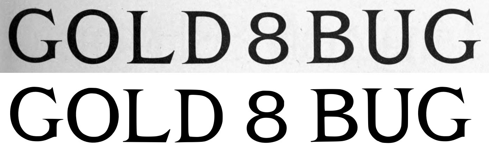
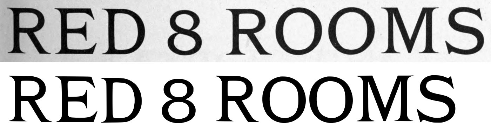
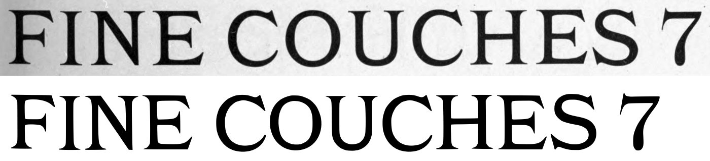
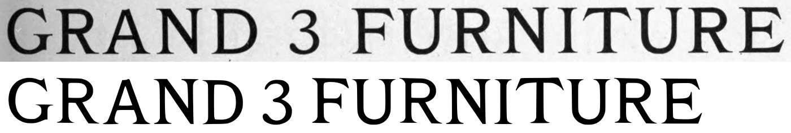
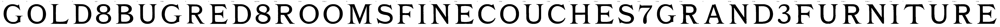

Gray letters are constructed, not traced.


0 warnings, 1 notes.
[
{
"level": "info",
"check": "specks",
"glyph": "E.24pt",
"value": 1,
"note": "marks beside the letter were recorded, not cut"
}
]
{
"221:48pt": {
"n_caps": 7,
"cap_height_px": 249,
"cap_source": "caps",
"baseline_px": 3554,
"baselines": {
"5": 3554
},
"glyphs": [
"G",
"O",
"L",
"D",
"eight",
"B",
"U",
"G.48pt"
],
"figure_height_px": 238,
"stem_px": 32,
"scale": 2.81124,
"stem_units": 90.0,
"figure_height": 669
},
"221:42pt": {
"n_caps": 8,
"cap_height_px": 209.0,
"cap_source": "caps",
"baseline_px": 3044.0,
"baselines": {
"4": 3044.0
},
"glyphs": [
"R",
"E",
"D.42pt",
"eight.42pt",
"R.42pt",
"O.42pt",
"O.42pt_2",
"M",
"S"
],
"figure_height_px": 205,
"stem_px": 26.5,
"scale": 3.34928,
"stem_units": 88.8,
"figure_height": 687
},
"221:30pt": {
"n_caps": 11,
"cap_height_px": 171,
"cap_source": "caps",
"baseline_px": 2579,
"baselines": {
"3": 2579
},
"glyphs": [
"F",
"I",
"N",
"E.30pt",
"C",
"O.30pt",
"U.30pt",
"C.30pt",
"H",
"E.30pt_2",
"S.30pt",
"seven"
],
"figure_height_px": 181,
"stem_px": 16,
"scale": 4.09357,
"stem_units": 65.5,
"figure_height": 741
},
"221:24pt": {
"n_caps": 14,
"cap_height_px": 128.0,
"cap_source": "caps",
"baseline_px": 2170.5,
"baselines": {
"2": 2170.5
},
"glyphs": [
"G.24pt",
"R.24pt",
"A",
"N.24pt",
"D.24pt",
"three",
"F.24pt",
"U.24pt",
"R.24pt_2",
"N.24pt_2",
"I.24pt",
"T",
"U.24pt_2",
"R.24pt_3",
"E.24pt"
],
"figure_height_px": 127,
"stem_px": 15.5,
"scale": 5.46875,
"stem_units": 84.8,
"figure_height": 695
}
}
{
"archive_id": "bookoftypespecim00barnrich",
"title": "Book of type specimens. Comprising a large variety of superior copper-mixed types, rules, borders, galleys, printing presses, electric-welded chases, paper and card cutters, wood goods, book binding machinery etc., together with valuable information to the craft. Specimen book no.9",
"creator": [
"Barnhart, bros. & Spindler, firm, type founders, Chicago",
"De Young family",
"De Young, Charles, 1881-"
],
"publisher": "Chicago, Barnhart bros. & Spindler",
"date": "[1907]",
"ppi": 400,
"url": "https://archive.org/details/bookoftypespecim00barnrich",
"copyright_status": "NOT_IN_COPYRIGHT",
"contributor": "University of California Libraries",
"leaves": [
221
]
}